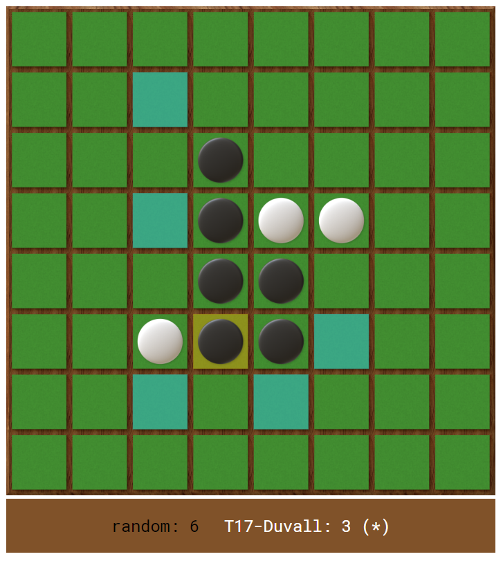

Located at https://othello.tjhsst.edu/
Code at https://github.com/duvallj/othello_tourney
I’d thought I’d finally write about my biggest creation so far. This baby has been developed through hundreds of hours across 3 years now. Aside from a few awesome webdev components provided by William O’Connell, I wrote all the code from scratch.
Background
The reason for the Othello Server’s existence starts in TJHSST’s Artificial Intelligence class. Every year, students in the class are assigned to write an AI program that plays the board game Othello. When I took the class, no one actually knew how to test their AI. All we were given was a simple shell to play the AI ourselves through a console window. Sharing your code with others was difficult, involving flash drives and lost programming time.
So, when I had finished my own AI early, my teacher and I came up with a plan. As an extra-credit project, I would create a simple web platform for students to upload their code to, allowing them to quickly test their code against their classmates’.
Apparently, I underestimated how much work it would take.
The Design
Evolution of the Othello Server frontend:
- Application that generated series of PNGs with PyGame
- Javascript canvas, SocketIO, everything is rectangles
- Javascript canvas, Websockets, and animated pieces
Evolution of the Othello Server backend:
- Running it on the same machine
- Running it remotely in a jailed process, Flask webserver
- 2-stage backend, one to coordinate the web clients (Django) and one to handle running the AIs (custom asyncio).
I am only going to explain in detail the current state because oh boy has everything changed a lot.
Frontend
The frontend uses websocket callbacks to trigger updates to a <canvas> element that displays the board. A few other HTML elements display the player names, score, and any error messages thrown by AI.
In the end, it looks pretty OK if I do say so myself.

Django
Django is a very nice web framework. I feel, though, it was meant for projects a bit bigger than mine. Pretty much the only reason I use it is for easy OAuth support and the best Websocket support. Doing either of those things in Flask was a lot harder and more bug-prone.
That’s not to say Django is without its bugs, either. Especially with Channels/ASGI, a lot of things that I thought should be obvious and “just work” didn’t, in fact, work. That was one of the major reasons I split up the backend into two parts. As it turns out, handling incoming clients, safely parsing what games they want to run or what games they want to watch, and actually running the games is best left split up.
Now, for how I actually structured my Django code. Django itself forces a pretty tight scheme already, but I did take some liberties, especially with the game running code placement:
manage.pyrun_ai_jailed.py(for running the jailed AIs)othello/settings.pyion_secret.py(contains secret keys, in.gitignore)urls.pyrouting.py(ASGI-specific, similar to above)asgi.pyandwsgi.pystatic/templates/apps/auth/(handles all the user authentication views, integration with the OAuth library)users/(defines the User model. Could be reasonably combined with above)games/(where most of the code lives. Handles interface with clients, game server backend)
gamescheduler/(where the entire game server code lives)
students/(where all the uploaded student code lives)run_gamescheduler_server.py(script to start the regular game server)run_tournament_gamescheduler_server.py(runs the game server in tournament mode, rejecting any external requests to play)csvity_aztr.py(turns results blob from tournament into a simple csv file)
Asyncio
Asyncio is the culmination of the Python development team’s twisted aims to bring about insanity in all programmers who attempt to use it. Something akin to viewing an eldritch abomination is required to fully understand the internal machinations of Futures, Tasks, coroutines, and awaitables. Once the knowledge invades, your mind will never be the same.
Jokes aside, programming something asyncio is seriously tough. Somehow, though, I pulled through in a weekend-long coding trance to get a fully asynchronous, multithreaded, custom protocol server working. The server using a monolithic protocol to keep track of all client states, something channels could never do (it spawns a new Consumer every time a client connects). Quick example below:
if __name__ == "__main__":
loop = asyncio.get_event_loop()
gs = GameScheduler(loop)
def game_scheduler_factory(): return gs
coro = loop.create_server(
game_scheduler_factory,
host=SCHEDULER_HOST,
port=SCHEDULER_PORT
)
server = loop.run_until_complete(coro)
# Server requests until Ctrl+C is pressed
log.info("Running server")
try:
loop.run_forever()
except KeyboardInterrupt:
pass
# Close the server
log.info("Stopping server")
server.close()
loop.run_until_complete(server.wait_closed())
loop.close()Ingoring all the stuff about setting up the event loop, let’s focus on how I instantiate the protocol on line 5. Asyncio expects the factory function to either be the class itself (which can be called like a function to create new members of the class) or a function that returns new members of the class with custom parameters. I am lazy and make a function that returns the same object over and over again, so only it is listening for all incoming connections.
This is so I can handle all the room processing from within one object, not having to rely on Django’s lock-prone ORM. I did encounter a few a lot way too many errors trying to get asyncio to work properly with handling many rooms at a time and their communication pipelines and all, but in the end it chugs along smoothly.
Firejail
Now for the part I had the least trouble with (surprisingly): sandboxing! Early on, I did my research and came to the conclusion that https://firejail.wordpress.com/ was probably the best solution to my problem of how to secure student AIs. It could be run from the command line, easily installed on Linux, and had robust whitelisting and capability limiting support. Here’s the file I use to sandbox AIs:
caps.drop all
net none
noroot
seccomp
whitelist /home/othello/www/venv
whitelist /home/othello/www/public
whitelist /home/othello/www/run_ai_jailed.py
whitelist /home/othello/www/run_ai.py
whitelist /home/othello/www/Othello_Core.py
whitelist /home/othello/www/othello_admin.pySimple easy, done, all that’s left is to surpress firejail’s output with the -q flag so it doesn’t mess up the other IPC I do.
Conclusion
I don’t really know where I was going with this. I have a lot of other in-code comments about the Othello Server that I will probably add to this post in the future.
If I had to choose one big takeaway, it’s this: one person can’t write an enterprise-grade app by themselves. They can try, and partially succeed, but it’ll soon become extremely hard to maintain without the help of others.
I’m hopeful that another Sysadmins at TJHSST will take up my mantle as the lead Othello Server developer after I’m gone. Anyways, thanks for reading if you made it this far.
TL;DR: Othello Server wack cool